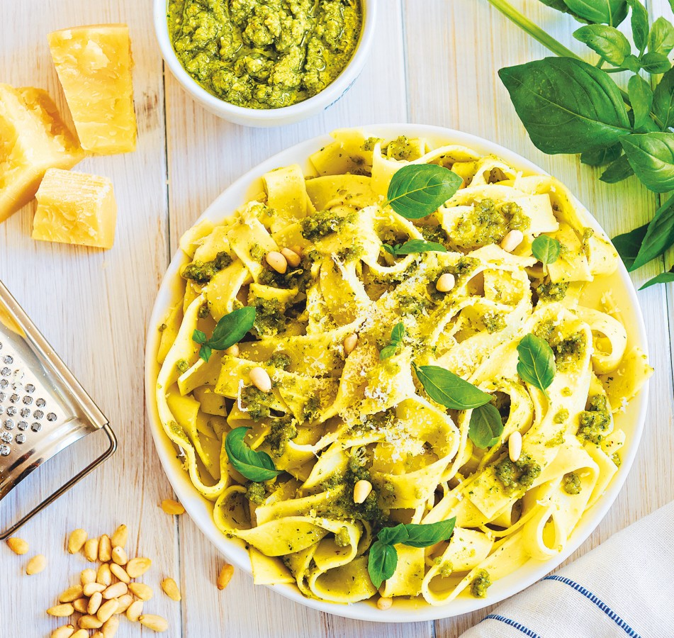

Těstoviny s pestem a kuřecím

Ingredience
- 250g těstovin (Penne/Fusilli)
- 1 kuřecí prso
- 3 lžíce bazalkového pesta
- Hrst piniových oříšků
- Parmazán a cherry rajčata
- Olivový olej, sůl
Postup přípravy
- Vaření: Těstoviny uvařte v osolené vodě al dente. Nechte si stranou lžíci vody z vaření.
- Maso: Kuřecí maso nakrájejte na kostky, osolte a orestujte na pánvi dozlatova.
- Míchání: Slijte těstoviny, smíchejte je na pánvi s masem, vodou z těstovin a pestem.
- Servírování: Podávejte s nakrájenými rajčaty, posypané parmazánem a oříšky.